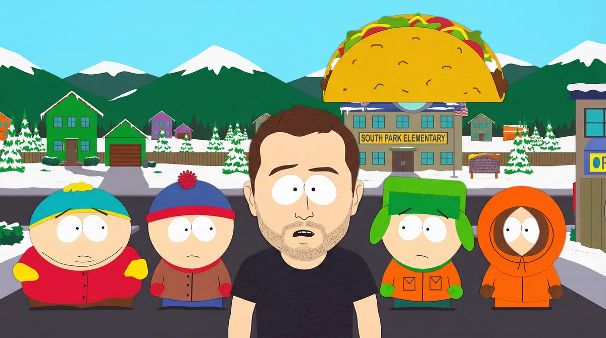
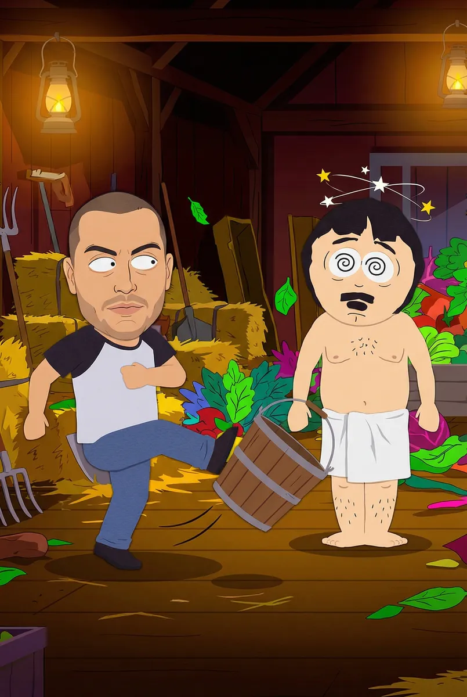
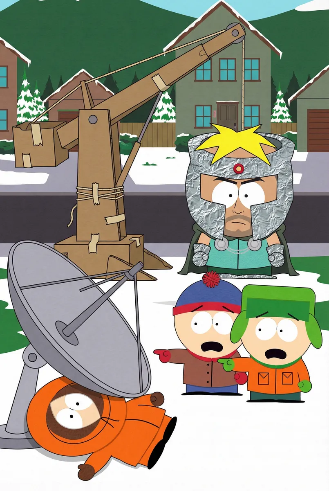
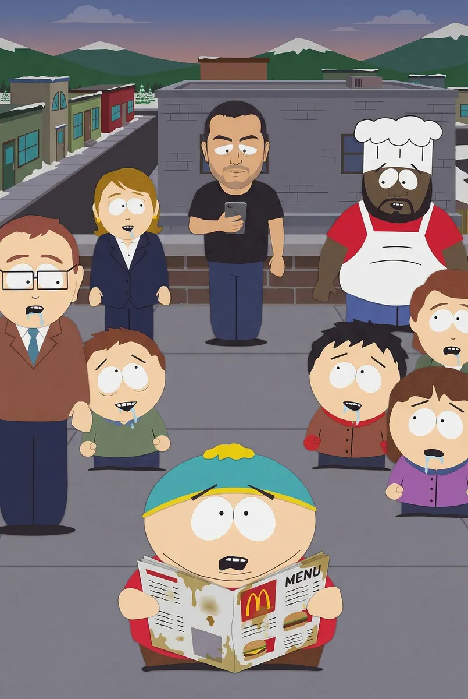
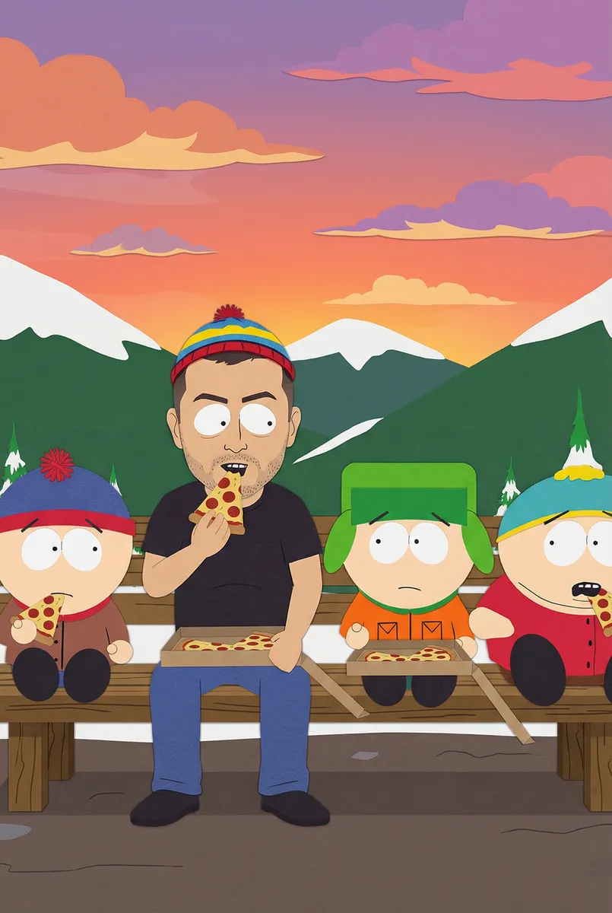

Ricardo e a Profecia do Taco Sagrado em South Park

Protagonizado por Ricardo
Capítulo 1
Ricardo chegou a South Park durante uma nevasca e foi imediatamente confundido por Cartman com um profeta lendário que traria o estoque infinito de nuggets do KFC. Antes que pudesse explicar que apenas buscava um café, Ricardo foi arrastado para o ponto de ônibus para uma reunião de emergência com a gangue.
Prompt: South Park style 2D animation. Ricardo standing at the iconic snowy bus stop. Cartman is pointing at him and shouting excitedly, while Stan and Kyle look skeptical. Kenny is muffled in his orange parka. High contrast, paper-cut aesthetic.

Capítulo 2
Para provar que era o escolhido, Ricardo foi desafiado por Randy Marsh a um duelo de dança e consumo de substâncias duvidosas no porão da Fazenda Tegridy. Ricardo, sem saber como, acabou vencendo a disputa ao tropeçar em um balde e derrubar acidentalmente toda a colheita premiada de Randy.
Prompt: South Park style animation. Ricardo in a dimly lit barn with Randy Marsh. Randy is wearing a towel and looking dizzy. Ricardo is accidentally kicking a wooden bucket. The scene is chaotic and colorful with green plants in the background.

Capítulo 3
A situação escalou quando o Professor Caos, vulgo Butters, surgiu para sequestrar Ricardo. No meio da confusão, um satélite espacial atingiu Kenny, matando-o instantaneamente. 'Meu Deus, eles mataram o Kenny!', gritou Stan, enquanto Ricardo era içado por um guindaste feito de papelão por Butters.
Prompt: South Park style animation. Professor Chaos (Butters) in his aluminum foil costume standing next to a makeshift cardboard crane. In the foreground, Kenny is flattened under a satellite. Stan and Kyle are pointing and yelling in despair.

Capítulo 4
Ricardo foi levado ao topo da prefeitura, onde Cartman tentava sacrificá-lo para invocar o Deus do Queijo Nacho. No entanto, Ricardo percebeu que a 'profecia' era apenas um cardápio de restaurante que Cartman encontrou no lixo. Ele usou seu celular para pedir pizza para todos, acalmando a multidão enfurecida.
Prompt: South Park style animation. Ricardo on a rooftop surrounded by the citizens of South Park, including Mayor McDaniels and Chef. Cartman is holding a greasy fast-food menu like a holy book. Ricardo is holding a smartphone, and the crowd looks hungry.

Capítulo 5
No final do dia, Ricardo sentou-se no banco da praça com Stan, Kyle e um Cartman emburrado que mastigava uma fatia de pizza. Ricardo percebeu que, apesar da insanidade, South Park era o lugar mais honesto que já visitara. Ele decidiu ficar, pelo menos até o próximo episódio surreal começar.
Prompt: South Park style animation. Ricardo, Stan, Kyle, and Cartman sitting together on a wooden bench at sunset. They are all eating pizza. The sky is orange and pink over the snowy mountains. Ricardo is wearing a small colorful winter hat like the others.
